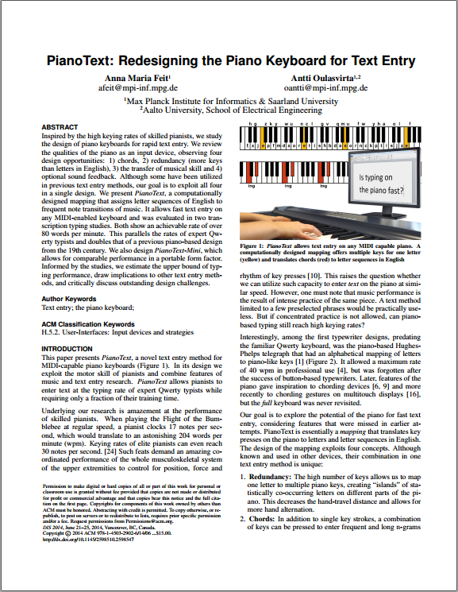
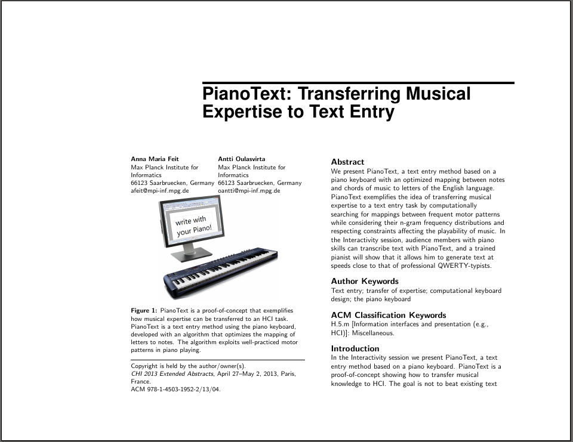
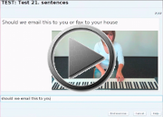
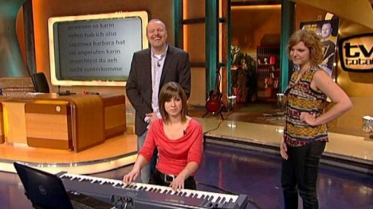
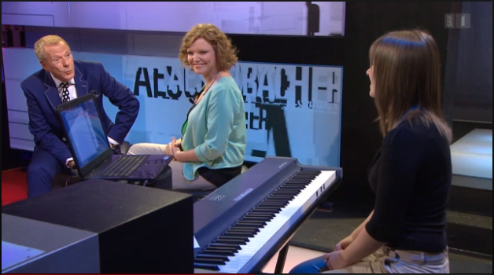

PianoText: Turn your Piano into a Typewriter
PianoText: Turn your Piano into a Typewriter
Anna Feit Antti Oulasvirta
What is PianoText?
PianoText is a mapping of language to music that allows to use any piano with a MIDI output for text entry.
It was inspired by the breathtaking performances of pianists like Yuja Wang and the Hughes Telegraph, a piano-like input device that was used in the mid of the 19th century, until the typewriter took over the market. Telegraphers of this time are known to enter text at a performance rate of 40 wpm or less which is nothing against an experienced pianist playing Rimski-Korsakow's Fligh of the Bumblebee - a performance rate of over 200 wpm!
The goal of PianoText was to find a better mapping from letters to notes such that the expertise of a pianist is transferred to the process of text entry and thus typing on the piano could reach similar performance rates as playing it. Therefore we developed a computational method that searched for a mapping between motor pattern in typing and piano playing, considering their n-gram frequency distributions and respecting constraints affecting the playability of music. The resulting mapping doubles the performance rates of the Hughes telegraph and there is still room for improvement.
It has the following features:
- An optimized finger travel distance for the English language, i.e. frequent letter pairs are close together
- It exploits the existing motor skills of the pianist by emulating musical structures
- The use of chords to enter a sequence of letters with one stroke, which improves the performance by more than 30%
- Redundancy: letters are mapped multiple times to different keys in different octaves. This together with chords creates many ways to enter a sequence of letters of which the user can choose the fastest. It also clusters the piano in several areas in which the user can type different words very quickly.
PianoText not only shows how to improve the Hughes telegraph but also gives insights into concepts that could be exploited for standard text entry devices. The use of chords and redundancy significantly improves the performance. PianoText gives us the chance to study these concepts and the arising phenomena that change the typing process more closely.
Try it out!
To use your piano keyboard as a text entry device you need:
If you have this ready download the following from our web server:
Our challenge to you: Play the example music sheet to see what sentences we translated. Play it as fast as possible and see if you can beat our Professional pianist who reached a performance rate of 80 wpm (at first sight!) |
If you just want to try it out:
You don't have to learn the mapping! Use the cheat sheet to see which note / chord translates to what. If you want to learn the mapping:
|
Articles and Videos
|  | PDF copy of
the paper presented at the ACM conference on Designing
Interactive Systems 2014, Vancouver: PianoText: Redesigning the Piano Keyboard for Text Entry: Feit, A., Oulasvirta, A. In Proceedings of the ACM conference on Designing Interactive Systems 2014 (Adobe Acrobat PDF, 254 KB) |
|  | PDF copy of the
Extended Abstract accompanying the Demonstration at CHI
2013, Paris: PianoText: Transferring Musical Expertise to Text Entry Feit, A., Oulasvirta, A. Extended Abstracts on Human Factors in Computing Systems ACM, 2013 (Adobe Acrobat PDF, 2.6 MB) |
|
|
|  |
Performance Example: Example sentences from the last test, entered with an input rate of over 80 wpm.  (.mp4, 6.22 MB) |
Media Coverage
Television:
Germany: TV Total by Stefan Raab, 21.01.14: Switzerland: Aeschbacher, 08.05.14

- PianoText in ACM's IX Interaction Magazine. Demo Hour.
- ScienceDaily: "The Piano as as Typewriter"
- Max-Planck Gesellschaft: "The piano as a typewriter"
- CLASSIC fM: "Pianists are like professional typists, says new study"
- iloveubuntu:
"Meet PianoText, link between computer and piano (typing-wise)"
- Golem.de: "Texte schreiben auf dem Klavier"
- Bild der Wissenschaft: "Kurios: Texte schreiben mit dem Klavier"
- scinexx:
"Texte-Schreiben auf dem Klavier"
- sr-online:
"Die Melodie des Tages"
Aditional Materials
{kind=link}
{kind=link}
Links
Citation
@inproceedings{feit2014pianotext,
author = {Feit, Anna Maria and Oulasvirta, Antti},
title = {PianoText: Redesigning the Piano Keyboard for Text Entry},
booktitle = {Proceedings of the 2014 Conference on Designing Interactive Systems},
series = {DIS '14},
year = {2014},
isbn = {978-1-4503-2902-6},
location = {Vancouver, BC, Canada},
pages = {1045--1054},
numpages = {10},
url = {http://doi.acm.org/10.1145/2598510.2598547},
doi = {10.1145/2598510.2598547},
acmid = {2598547},
publisher = {ACM},
address = {New York, NY, USA},
keywords = {text entry, the piano keyboard},
}
@inproceedings{feit2013pianotext,
author = {Feit, Anna Maria and Oulasvirta, Antti},
title = {PianoText: transferring musical expertise to text entry},
booktitle = {CHI '13 Extended Abstracts on Human Factors in Computing Systems},
year = {2013},
pages = {3043--3046},
url = {http://doi.acm.org/10.1145/2468356.2479606},
publisher = {ACM},
keywords = {computational keyboard design, text entry, the piano keyboard, transfer of expertise},
}
Contact
If you have any problems concerning the software or any
questions about the project, don't hesitate to write an email!
Anna Maria Feit
Aalto University, Department of Electrical Engineering
feitanna@gmail.com